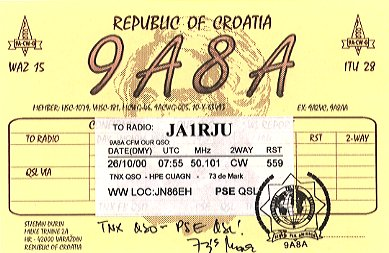
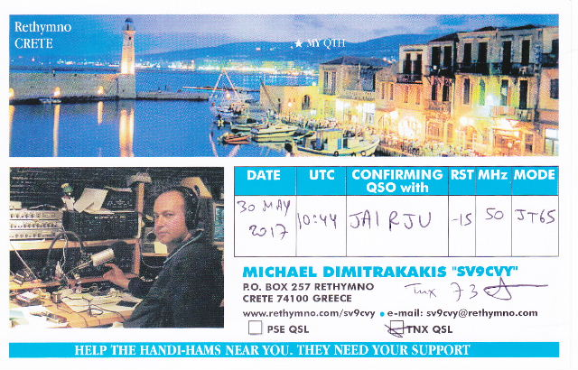

Flash ! DX


 |
|
|
|
 |
|
|
[Back Issues Aug.2017]
TIME:UTC(JST-09:00)
Report from JA1RJU(PM95sq)
31.Aug.2017(15:00b)
Report from JA1RJU(PM95sq)
30.Aug.2017(15:00b)
Report from JA1RJU(PM95sq)
29.Aug.2017(15:00b)
BG9OF 07:11 50.276-1217 WSJT JT65a CQ
BG9OF 07:15 50.276-1217 WSJT JT65a -24dB QSO with JA2
BG9OF 07:21 50.276-1884 WSJT JT65a -22dB CQ
BG9OF 07:23 50.276-1885 WSJT JT65a -23dB CQ
BG9OF 07:37 50.276-1884 WSJT JT65a -22dB QSO with JA2
BG9OF 07:41 50.276-1884 WSJT JT65a -22dB/-19dB(QSO=40W)
Report from JA1RJU(PM95sq)
28.Aug.2017(15:00b)
Report from JA1RJU(PM95sq)
27.Aug.2017(15:00b)
◎6SG(岩手・一ノ関大会)
Report from JA1RJU(PM95sq)
26.Aug.2017(15:00b)
◎6SG(岩手・一ノ関大会)
Report from JA1RJU(PM95sq)
25.Aug.2017(15:00b)
Report from JA1RJU(PM95sq)
24.Aug.2017(15:00b)
Report from JA1RJU(PM95sq)
23.Aug.2017(15:00c)
DU7/PA0HIP 04:10 50.276-1819 WSJT JT65a -18dB CQ(PK10)
DU7/PA0HIP 04:16 50.276-1820 WSJT JT65a -21dB CQ
DU7/PA0HIP 06:56 50.276-1829 WSJT JT65a -21dB CQ
Report from JA1RJU(PM95sq)
22.Aug.2017(15:00b)
Report from JA1RJU(PM95sq)
21.Aug.2017(15:00c)
DU7/PA0HIP 08:00 50.276-692 WSJT JT65a -16dB QSO with JA5
DU7/PA0HIP 08:08 50.276-1895 WSJT JT65a -11dB CQ(PK10)
DU7/PA0HIP 08:12-08:28 50.276-**** WSJT JT65a -10dB QSO with JA1/3/4/5/6
DU7/PA0HIP 08:30 50.276-2124 WSJT JT65a -16dB CQ
DU7/PA0HIP 08:32- 50.276-**** WSJT JT65a -14dB QSO with JA1/8
DU7/PA0HIP 08:46 50.276-2004 WSJT JT65a -21dB CQ
Report from JA1RJU(PM95sq)
20.Aug.2017(15:00d)
DS3CHK 06:23 50.276-1061 WSJT JT65a -08dB CQ
DU7/PA0HIP 06:26 50.276-1994 WSJT JT65a into JA5
9M2/JG3TTO 06:36 50.276-1223 WSJT JT65a QSO with JA2
DS3CHK 06:52 50.276-1461 WSJT JT65a -07dB CQ
9M2/JG3TTO 07:02 50.276-1328 WSJT JT65a -17dB QSO with JA1
9M2TO 07:04 50.276-429 WSJT JT65a -10dB CQ(OJ05)
9M2/JG3TTO 07:02 50.276-1328 WSJT JT65a -17dB QSO with JA1
9M2/JG3TTO 07:04 50.276-1427 WSJT JT65a -22dB CQ
9M2TO 07:04 50.276-429 WSJT JT65a -10dB CQ
9M2/JG3TTO 07:06 50.276-1228 WSJT JT65a -21dB QSO with JA0
9M2TO 07:08 50.276-442 WSJT JT65a -19dB CQ
9M2TO 07:12- 50.276-**** WSJT JT65a -16dB QSO with JA1/2
9M2/JG3TTO 07:18 50.276-1229 WSJT JT65a -16dB CQ
9M2TO 07:20 50.276-439 WSJT JT65a -18dB CQ
9M2/JG3TTO 07:26 50.276-1332 WSJT JT65a -18dB QSO with JA1
9M2/JG3TTO 07:32 50.276-1332 WSJT JT65a -16dB/-25dB(QSO=30W)
9M2/JG3TTO 07:38 50.276-1323 WSJT JT65a -13dB CQ
9M2/JG3TTO 07:42 50.276-1323 WSJT JT65a -21dB CQ
DU7/PA0HIP 08:00 50.276-1956 WSJT JT65a -22dB CQ(PK10)
9M2TO 08:00 50.276-428 WSJT JT65a QSO with JA3
9M2TO 08:24 50.276-436 WSJT JT65a -25dB CQ
9M2/JG3TTO 08:24 50.276-1631 WSJT JT65a -12dB CQ
DU7/PA0HIP 08:38 50.276-1954 WSJT JT65a -01dB CQ(PK10)
9M2/JG3TTO 08:46 50.276-1629 WSJT JT65a -13dB CQ
(JR6YAG/b 08:50- 50.037 CW Beacon RST599)
9M2TO 08:50 50.276-1025 WSJT JT65a -13dB CQ
9M2/JG3TTO 08:50- 50.276-**** WSJT JT65a -09dB QSO with JA1-6
9M2/JG3TTO 09:32 50.276-1629 WSJT JT65a -18dB CQ
9M2TO 09:42-09:54 50.276-**** WSJT JT65a -13dB QSO with JA1/2/3
9M2TO 09:54 50.276-1019 WSJT JT65a -22dB CQ
9M2/JG3TTO 09:56 50.276-741 WSJT JT65a -10dB CQ
DU7/PA0HIP 10:06 50.276-1583 WSJT JT65a -01dB CQ(PK10)
DU7/PA0HIP 10:18-10:22 50.276-1583 WSJT JT65a -01dB CQ
Report from JA1RJU(PM95sq)
19.Aug.2017(15:00b)
DU7/PA0HIP 07:02 50.276-1802 WSJT JT65a -23dB CQ(PK10)
Report from JA1RJU(PM95sq)
18.Aug.2017(15:00b)
Report from JA1RJU(PM95sq)
17.Aug.2017(15:00b)
Report from JA1RJU(PM95sq)
16.Aug.2017(15:00b)
Report from JA1RJU(PM95sq)
15.Aug.2017(15:00c)
DU7/PA0HIP 08:24 50.276-1924 WSJT JT65a -01dB CQ(PK10)
DU7/PA0HIP 08:28 50.276-1921 WSJT JT65a -01dB CQ
Report from JA1RJU(PM95sq)
14.Aug.2017(15:00c)
VR2VAZ 03:53 50.276-1686 WSJT JT65a -06dB CQ(OL72)
VR2VAZ 03:57 50.276-1686 WSJT JT65a -06dB/-15dB(30W=QSO)
VR2VAZ 04:01 50.276-1709 WSJT JT65a -13dB CQ
DU7/PA0HIP 04:04 50.276-1709 WSJT JT65a -01dB calling VR2VAZ
VR2VAZ 04:11 50.276-1720 WSJT JT65a -10dB CQ
DU7/PA0HIP 04:19 50.276-1409 WSJT JT65a -06dB CQ
VR2VAZ 04:19 50.276-1722 WSJT JT65a -14dB CQ
VR2VAZ 04:23 50.276-1723 WSJT JT65a -12dB calling to VR2OC
VR2VAZ 04:27 50.276-1723 WSJT JT65a -08dB CQ
VR2VAZ 04:41-04:52 50.276-**** WSJT JT65a -06dB QSO with JA1-4/JA0
VR2VAZ 04:55 50.276-1928 WSJT JT65a -23dB CQ DX
VR2VAZ 04:56-05:02 50.276-**** WSJT JT65a into JA1/7
Report from JA1RJU(PM95sq)
13.Aug.2017(15:00b)
Report from JA1RJU(PM95sq)
12.Aug.2017(15:00c)
BD7OH 02:58 50.276-1316 WSJT JT65a -11dB QSO with JA8
BD7OH 03:15 50.276-1471 WSJT JT65a -07dB QSO with JA1
BV7RJ 03:45 50.276-869 WSJT JT65a QSO with JA7
BD7OH 03:53 50.276-**** WSJT JT65a QSO with JA7/8
HL1JLF 04:00 50.276-419 WSJT JT65a QSO with JA1
HL1JLF 04:07 50.276-1019 WSJT JT65a -02dB QSO with JA1
DU7/PA0HIP 04:12 50.276-1896 WSJT JT65a -01dB CQ(PK10)
DU7/PA0HIP 04:14 50.276-1892 WSJT JT65a -01dB QSO with JA8
DU7/PA0HIP 04:36 50.276-1246 WSJT JT65a -01dB CQ
DU7/PA0HIP 04:42 50.276-1252 WSJT JT65a -01dB CQ
VK3GYH 05:12 50.276-2040 WSJT JT65a into JA7
DU7/PA0HIP 05:38 50.276-1637 WSJT JT65a -04dB CQ
DU7/PA0HIP 06:00 50.276-1924 WSJT JT65a -22dB CQ
VK6KXW 07:29 50.276-876 WSJT JT65a -16dB CQ(OF87)
VK6KXW 07:30-07:44 50.276-**** WSJT JT65a -16dB QSO with JA1/7/8
VK6KXW 07:46 50.276-**** WSJT JT65a -06dB QSO with JA1/7
DU7/PA0HIP 07:52 50.276-1817 WSJT JT65a -24dB CQ
VK6KXW 07:56- 50.276-1019 WSJT JT65a -01dB CQ
DU7/PA0HIP 08:40 50.276-**** WSJT JT65a -13dB CQ
VK6KXW 08:43 50.276-**** WSJT JT65a -06dB QSO with JA1/7
Report from JA1RJU(PM95sq)
11.Aug.2017(15:00c)
DU7/PA0HIP 05:30 50.276-1904 WSJT JT65a -21dB CQ(PK10)
DU7/PA0HIP 04:36- 50.276-**** WSJT JT65a QSO withJA1/7/0
DU7/PA0HIP 06:08 50.276-1924 WSJT JT65a -06dB CQ
DU7/PA0HIP 06:28 50.276-1896 WSJT JT65a -03dB QSO with JA7
9M2/JG3TTO 07:50 50.276-1142 WSJT JT65a into JA1
DU7/PA0HIP 07:52 50.276-1909 WSJT JT65a -06dB CQ
9M2/JG3TTO 07:54 50.276-1421 WSJT JT65a QSO with JA7
DU7/PA0HIP 08:30 50.276-1910 WSJT JT65a -01dB CQ
DU7/PA0HIP 08:34 50.276-1911 WSJT JT65a -01dB CQ
9M2/JG3TTO 09:08 50.276-**** WSJT JT65a QSO with JA1-3/JA7
9M2TO 09:10 50.276-825 WSJT JT65a QSO with JA7
9M2TO 09:16 50.276-843 WSJT JT65a -17dB QSO with JA0
No propagation from Europe.
Report from JA1RJU(PM95sq)
10.Aug.2017(15:00b)
Report from JA1RJU(PM95sq)
09.Aug.2017(15:00b)
No propagation from DX.
Report from JA1RJU(PM95sq)
08.Aug.2017(15:00c)
ZL2WHO 02:54 50.276-1505 WSJT JT65a -18dB CQ
ZL1RQ 04:07 50.276-1520 WSJT JT65a into JA5
JD1BOI 05:04 50.182 CW JA1-5/JA7
F5MYK/MM 09:40 50.276-1105 WSJT JT65a -12dB CQ(PM06)
F5MYK/MM 10:15 50.110 CW CQ weak
◎ 7月21日に東太平洋上で発生した台風5号は、その後19日間日本近海を迷走した後、奄美列島付近を経由して北上、鹿児島東部を通過、四国沖を通り和歌山県に上陸した。台風は全国的に広範囲な豪雨被害をもたらしながら北上、和歌山から近畿中部地方、北陸を通過、8日午後現在、新潟県沖をゆっくり北上を続けている。暴風圏は無くなったものの、直径約1000Kmの強風圏を保ったまま。関東地方もまだこの強風圏に入っているが、東京では風による影響はほとんど感じられない。
Esマルチホップ伝搬で爆発的に賑わっていたEU方面のDXコンデションもそろそろ最終段階。今日は久しぶりに正午頃からWSJTによるZL2WHO、ZL1RQの入感があった。信号は-18-20dB程度と弱くQSOは出来なかった。本格的なTEPによるVK/ZLの入感にはまだ早いが、Esが弱まってくる8月下旬頃から本格的なオープンが期待されそう。
Report from JA1RJU(PM95sq)
07.Aug.2017(15:00c)
DU7/PA0HIP 09:27- 50.276-1927 WSJT JT65a -02dB QSO with JA4
DU7/PA0HIP 09:31 50.276-1927 WSJT JT65a -02dB
DU7/PA0HIP 09:33 50.276-1994 WSJT JT65a -01dB QSO with JA1
DU7/PA0HIP 09:42 50.276-1795 WSJT JT65a -02dB CQ(PK10)
DU7/PA0HIP 09:50 50.276-1924 WSJT JT65a -03dB QSO with JA7
DU7/PA0HIP 10:02 50.276-1896 WSJT JT65a -04dB CQ(PK10)
BH4DKV 10:14 50.276-856 WSJT JT65a -08dB QSO with JA1
DU7/PA0HIP 10:26 50.276-1901 WSJT JT65a -14dB QSO with JA7
DU7/PA0HIP 10:30 50.276-1901 WSJT JT65a -09dB CQ(PK10)
No propagation from Europe.(-15:00z)
Report from JA1RJU(PM95sq)
06.Aug.2017(15:00d)
BA4SI 09:15 50.276-750 WSJT JT65a -02dB CQ
BH4BKV 09:16 50.276-755 WSJT JT65a -11dB Calling BA4SI
BA4SI 09:17 50.276-750 WSJT JT65a -08dB QSO with JA1
No propagation from Europe.(-15:00z)


今季WSJT(JT65a)でアクティブにQRVしたSV9CVY
Report from JA1RJU(PM95sq)
05.Aug.2017(15:00c)
US5WE 07:06 50.276-1922 WSJT JT65a -20dB CQ(KN29)
US5WE 07:16 50.276-1057 WSJT JT65a -19dB CQ
US5WE 07:24 50.276-1192 WSJT JT65a into JA2/4
UY7VV 07:35 50.276-1102 WSJT JT65a QSO with JA3
US5WE 07:48 50.276-663 WSJT JT65a QSO with JA2
UX4UA 07:56 50.276-1040 WSJT JT65a -19dB QSO with JA2
S57RR 07:56 50.276-1287 WSJT JT65a -21dB QSO with JA3
S57TW 07:58 50.276-778 WSJT JT65a -15dB CQ DX(JN75)
UX4UA 07:58 50.276-1043 WSJT JT65a -14dB QSO with JA2
SP8ANL 08:01 50.276-847 WSJT JT65a into JA3(Odd)
S57TW 08:02 50.276-780 WSJT JT65a -22dB QSO with JA2
S57RR 08:06- 50.276-1287 WSJT JT65a -15dB calling
F5MYK/MM 08:13 50.276-1430 WSJT JT65a into JA1(Odd)
BA4SI 08:17 50.276-1130 WSJT JT65a -13dB CQ
DL5SG 08:17 50.276-1548 WSJT JT65a into JA1(Odd)
F5MYK/MM 08:21 50.276-1425 WSJT JT65a QSO with JA1(Odd)
HL4GHT 08:22 50.276-1218 WSJT JT65a -17dB CQ DX
DS5EVU 08:29 50.276-1122 WSJT JT65a -02dB CQ
HL1JLF 08:29 50.276-839 WSJT JT65a -01dB CQ
S57RR 08:34 50.276-1287 WSJT JT65a QSO with JA5
S57TW 08:34 50.276-599 WSJT JT65a QSO with JA6
F5MYK/MM 08:35 50.276-1424 WSJT JT65a QSO with JA1(Odd)
HL5MFJ 08:48 50.276-2106 WSJT JT65a into JA5
BA4SI 08:59 50.276-779 WSJT JT65a QSO with JA7
DS4EOI 09:11 50.276-1466 WSJT JT65a -01dB CQ EU
DS4EOI 09:29 50.276-1466 WSJT JT65a -01dB CQ EU
DU7/PA0HIP 09:50 50.276-1508 WSJT JT65a -09dB QSO with JA7
DU7/PA0HIP 09:54 50.276-1797 WSJT JT65a -22dB CQ(PK10)
Report from JA1RJU(PM95sq)
04.Aug.2017(15:00b)
JT1FTB/7 02:52 50103.0 CW CQ(RST599) into JA1
BA4SI 06:03 50.276-827 WSJT JT65a -18dB CQ
BA4SI 06:13 50.276-836 WSJT JT65a -20dB CQ
Report from JA1RJU(PM95sq)
03.Aug.2017(15:00b)
JT1FTB/7 02:12 50103.0 CW RST599 JA1-4
No propagation from Europe.(-15:00z)
Report from JA1RJU(PM95sq)
02.Aug.2017(15:00d)
DS4EOI 03:49 50.276-1457 WSJT JT65a -12dB CQ EU
UT9LC 06:26 50.276-1152 WSJT JT65a QSO with JA8
UR5LAK 06:34 50.276-1151 WSJT JT65a QSO with JA8
UR5LAK 06:52 50.276-1103 WSJT JT65a -21dB QSO with US0MS
UR5LAK 06:54 50.276-1103 WSJT JT65a into JA1
UT9LC 07:00 50.276-842 WSJT JT65a -19dB QSO with JA1
UW1TM 07:04 50.276-1966 WSJT JT65a -15dB CQ(KM69)
UW1HM 07:10 50.276-2445 WSJT JT65a -19dB CQ
DK8NE 07:18 50.276-1851 WSJT JT65a QSO with JA2
YO9HP 07:30 50.276-1444 WSJT JT65a -23dB CQ DX(KN35)
DK8NE 07:34 50.276-1653 WSJT JT65a QSO with JA1
LA1KP 07:35 50.276-1312 WSJT JT65a into JA1(Odd)
US5WE 07:52 50.276-1290 WSJT JT65a -09dB QSO with JA8
UX2SB 08:04 50.276-1295 WSJT JT65a -21dB QSO with JA7
UR7DWW 08:04 50.276-1949 WSJT JT65a -26dB QSO with JA1
US5WE 08:08 50.276-1102 WSJT JT65a -21dB CQ(KN29)
SP8AWL 08:10- 50.276-**** WSJT JT65a into JA1/0
UR5WA 08:14 50.276-1292 WSJT JT65a -22dB QSO with JA8
SP8AWL 08:14 50.276-1292 WSJT JT65a QSO with JA1
YO9HP 08:16 50.276-840 WSJT JT65a into JA2
YO9HP 08:20 50.276-829 WSJT JT65a QSO with JA2
UX2SB 08:20 50.276-1049 WSJT JT65a QSO with JA2
US5WE 08:24 50.276-1831 WSJT JT65a -24dB into JA1/8
US2SB 08:30 50.276-1052 WSJT JT65a QSO with JA1
SM7MGH 08:40 50.276-1085 WSJT JT65a into JA0
HA8CE 08:42 50.276-966 WSJT JT65a QSO with JA1
UR7DWW 08:45 50.276-1421 WSJT JT65a QSO with JA0
DK3WE 08:50 50.276-1209 WSJT JT65a into JA0
UR5WA 09:00 50.276-853 WSJT JT65a QSO with JA0
UR7DWW 09:04 50.276-1419 WSJT JT65a into JA0
US5WE 09:08 50.276-847 WSJT JT65a QSO with JA0
SP9FKQ 09:36 50.276-**** WSJT JT65a into JA2/0
Report from JA1RJU(PM95sq)
01.Aug.2017(15:00d)
JT1BU 04:28 50.276-1196 WSJT JT65a -01dB CQ(ON37)
JT1BU 04:30 50.276-1178 WSJT JT65a -01dB CQ(ON37)
JT1BU 04:32 50.276-1161 WSJT JT65a -01dB QSO with JA3
JT1BU 05:18 50.276-1125 WSJT JT65a -05dB QSO with JA2
JT1BU 05:47 50.276-1146 WSJT JT65a -05dB QSO with JS6
BA4SI 07:01 50.276-766 WSJT JT65a -24dB CQ
4O6AH 07:32 50.276-1410 WSJT JT65a into JA6
DL1YM 07:34 50.276-1541 WSJT JT65a into JA3
DL1YM 07:36 50.276-1541 WSJT JT65a QSO with JA3
4O6AH 07:38 50.276-**** WSJT JT65a into JA3/5/6
JT1BU 07:40 50.276-1150 WSJT JT65a -20dB CQ(ON37)
G4FUF 07:42 50.276-1265 WSJT JT65a into JA5
SV8RX 07:44 50.276-844 WSJT JT65a -20dB into JA1/3
4O6AH 07:44 50.276-**** WSJT JT65a into JA3-6
EI3KD 07:48 50.276-**** WSJT JT65a into JA2/3/4/5/9
PA0O 07:50 50.276-**** WSJT JT65a into JA1-3
SV8RX 07:56 50.276-724 WSJT JT65a -16dB CQ(KM06)
LZ2WO 07:58 50.276-1329 WSJT JT65a -07dB CQ(KN23)
SV8RX 08:02 50.276-1975 WSJT JT65a -13dB CQ
EI3KD 08:02 50.276-**** WSJT JT65a into JA1-5
SV8RX 08:04 50.276-1976 WSJT JT65a -16dB QSO with UT4XU
LZ2WO 08:04 50.276-1329 WSJT JT65a -19dB CQ DX
JT1BU 08:06 50.276-758 WSJT JT65a -15dB CQ(ON37)
4O6AH 08:06 50.276-1258 WSJT JT65a into JA2
EI3KD 08:08 50.276-1978 WSJT JT65a QSO with JA2
JT1BU 08:20 50.276-546 WSJT JT65a -01dB QSO with DS5EVU
EI4DQ 08:30 50.276-2381 WSJT JT65a into JA9
G4FUF 08:30 50.276-1647 WSJT JT65a into JA5
G0MBL 08:32 50.276-736 WSJT JT65a into JA3
F6BKI 08:32 50.276-1263 WSJT JT65a into JA6
EI3KD 08:32 50.276-1921 WSJT JT65a into JA7
G3WOS 08:32 50.276-2060 WSJT JT65a into JA2
4O6AH 08:32 50.276-2097 WSJT JT65a into JA6
EI4DQ 08:32 50.276-2350 WSJT JT65a into JA9
JT1BU 08:34 50.276-1244 WSJT JT65a -01dB CQ
4O6AH 08:34 50.276-2098 WSJT JT65a into JA6
EI4DQ 08:34 50.276-2167 WSJT JT65a into JA5
EA6VQ 08:34 50.276-1515 WSJT JT65a into JA2
G4CCZ 08:36 50.276-736 WSJT JT65a into JA7
EI4DQ 08:36 50.276-2410 WSJT JT65a into BA4SI
4O6AH 08:36 50.276-2098 WSJT JT65a into JA6
EI4DQ 08:36 50.276-**** WSJT JT65a into JA3/4/7
G0CCZ 08:38 50.276-735 WSJT JT65a into JA7
PA0RDY 08:40 50.276-1840 WSJT JT65a into JA7
EA6VQ 08:40 50.276-1515 WSJT JT65a into JA2
EI3KD 08:40 50.276-**** WSJT JT65a into JA9/BA4SI
F6BKI 08:42 50.276-735 WSJT JT65a into JA2
EA6VQ 08:42 50.276-1514 WSJT JT65a into JA2
G4OCZ 08:42 50.276-**** WSJT JT65a into JA2/3/4/5
G3WOS 08:42 50.276-1462 WSJT JT65a into JA4
GU8FBO 08:44 50.276-**** WSJT JT65a into JA3/4
G4OCZ 08:44 50.276-2047 WSJT JT65a QSO with JA3
EA6VQ 08:46 50.276-1514 WSJT JT65a -19dB QSO with JA2
G4FUF 08:46 50.276-**** WSJT JT65a into JA3/5
OH3SR 08:48 50.276-1826 WSJT JT65a into JA6
EA7HG 08:50 50.276-1650 WSJT JT65a into JA1
JT1BU 08:52 50.276-1226 WSJT JT65a -01dB CQ
G4RRA 08:52 50.276-1852 WSJT JT65a into JA6
G6BKI 08:54 50.276-557 WSJT JT65a -18dB QSO with JA1
G6BKI 08:58 50.276-861 WSJT JT65a -21dB QSO with JA1
IS0BSR 09:00 50.276-2353 WSJT JT65a -25dB CQ(JM49)
IS0BSR 09:04 50.276-2354 WSJT JT65a -25dB QSO with JA1
F6BKI 09:06 50.276-548 WSJT JT65a -25dB CQ AS(IN94)
PA5JS 09:06 50.276-969 WSJT JT65a -21dB CQ(JO21)
IS0BSR 09:06 50.276-2355 WSJT JT65a -17dB CQ(JM49)
JT1BU 09:08 50.276-1248 WSJT JT65a -01dB QSO with JA0
PA0O 09:12 50.276-2158 WSJT JT65a -20dB QSO with JA1
ON6CC 09:15 50.276-528 WSJT JT65a into JA1(Odd)
OH8MGK 09:18 50.276-1413 WSJT JT65a -26dB QSO with JA0
JT1BU 09:20 50.276-1237 WSJT JT65a -07dB CQ
GU8FBO 09:24 50.276-1780 WSJT JT65a into JA2
F6BKI 09:28 50.276-865 WSJT JT65a QSO with JA5
HL72V 09:29 50.276-2244 WSJT JT65a into JA4
M0DHO 09:32 50.276-1473 WSJT JT65a into JA2
JT1BU 09:40 50.276-1230 WSJT JT65a QSO with JA7
JT1BU 09:40-10:20 50.276-**** WSJT JT65a QSO with JA1/6/9
JT1BU 10:20 50.276-1230 WSJT JT65a QSO with DU1/PA0HIP
JT1BU 10:22 50.276-1226 WSJT JT65a QSO with JA6
◎Midway and Kure Islands Reinstated as DXCC Entities (05/11/2017)
On March 31, 2017, the DXCC desk announced the deletion of Midway Island and Kure Island from the DXCC entities list. The stated reason for this action was because of changes in the administration resulting from changes in Papah?naumoku?kea Marine National Monument, formerly known as the Northwestern Hawaiian Islands Marine National Monument, of which the Midway Atoll National Wildlife Refuge and the Battle of Midway National Memorial, the Hawaii State Seabird Sanctuary at Kure Atoll, and the Northwestern Hawaiian Islands State Marine Refuge, of which they are all included.
After further review it has been found that the deletion of these two entities is not supported by the changes that were made to the relevant administrations. Therefore, the deletions from the DXCC list should not have occurred and the two entities, Midway Island KH4 and Kure Island KH7K, will return to the DXCC list as separate entities.


Midway and Kure Re-instated
2017年3月31日付けで、ARRL/DXCCデスクはDXCCエンティティリストからミッドウェイ島(KH4)とクレ島(KH7K)の削除を発表した。この行動に述べられた理由は、"Papahanaumokuakea"船舶国定史跡天然記念物〈以前ノースウェスタンハワイ諸島船舶国定史跡天然記念物として知られている〉に関連したミッドウェイ環礁全国禁猟区、およびそれらすべてが含まれるミッドウェー海戦全国記念、クレ環礁のハワイ州海鳥聖域、ノースウェスタンハワイ諸島状態船舶避難の変化に起因している管理に変化があったと認められたため。更に検討をした結果、これらの2つのエンティティの削除は、関連した管理に起こされた変化によってサポートされないのが見つけられたことによって、DXCCリストからの削除は要綱に該当しないと判断されたため、2つのエンティティ、ミッドウェイ島(KH4)、およびクレ島(KH7K）は、ハワイ本島とは個別のエンティティとして認め、DXCCリストに再び戻される事になった。